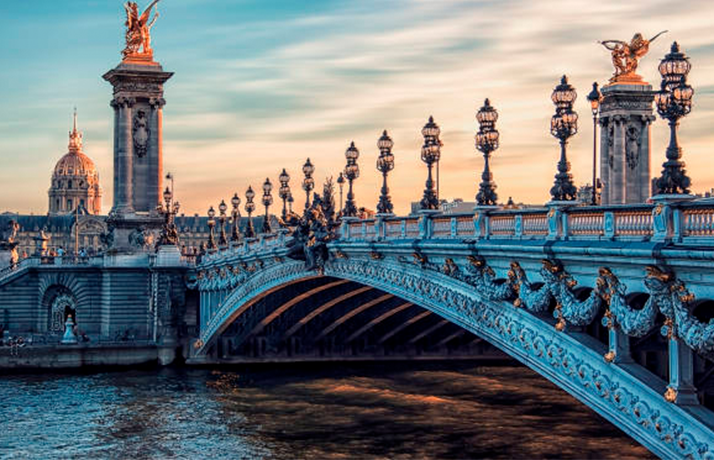
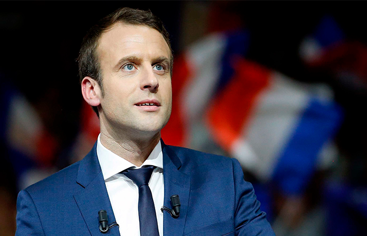
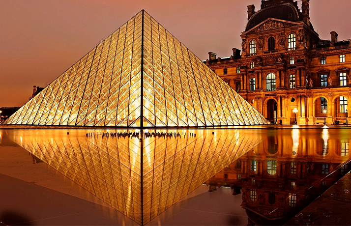

Bun venit in Franța!
General
Franța este o țară cu o istorie bogată, cultură și bucătărie rafinată. Aici veți găsi informații despre geografia, atracțiile, bucătăria națională și istoria acestei țări uimitoare.

Președintele
Emmanuel Macron (născut pe 21 decembrie 1977) este un politician francez, fost bancher de investiții, care ocupă funcția de președinte al Franței din 2017. El este la conducerea statului deja de 8 ani.

Paris
Paris este capitala Franței, un oraș renumit pentru istoria sa bogată, arhitectura impresionantă și simboluri iconice precum Turnul Eiffel și Catedrala Notre-Dame.Este cunoscut și ca „Orașul Luminilor”.
